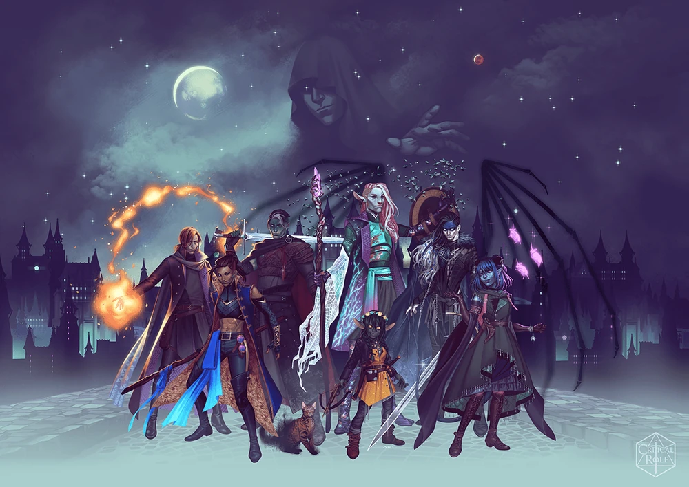
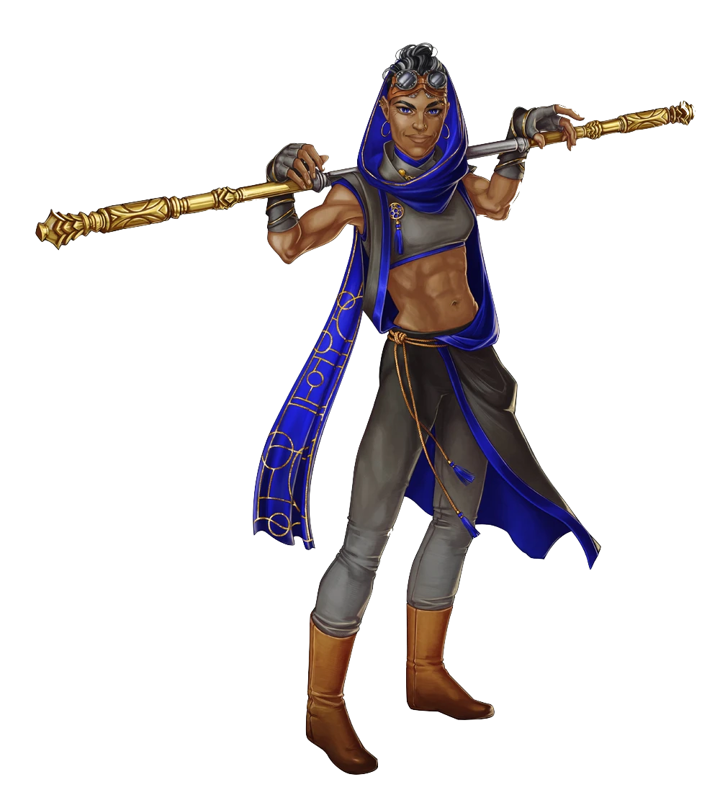
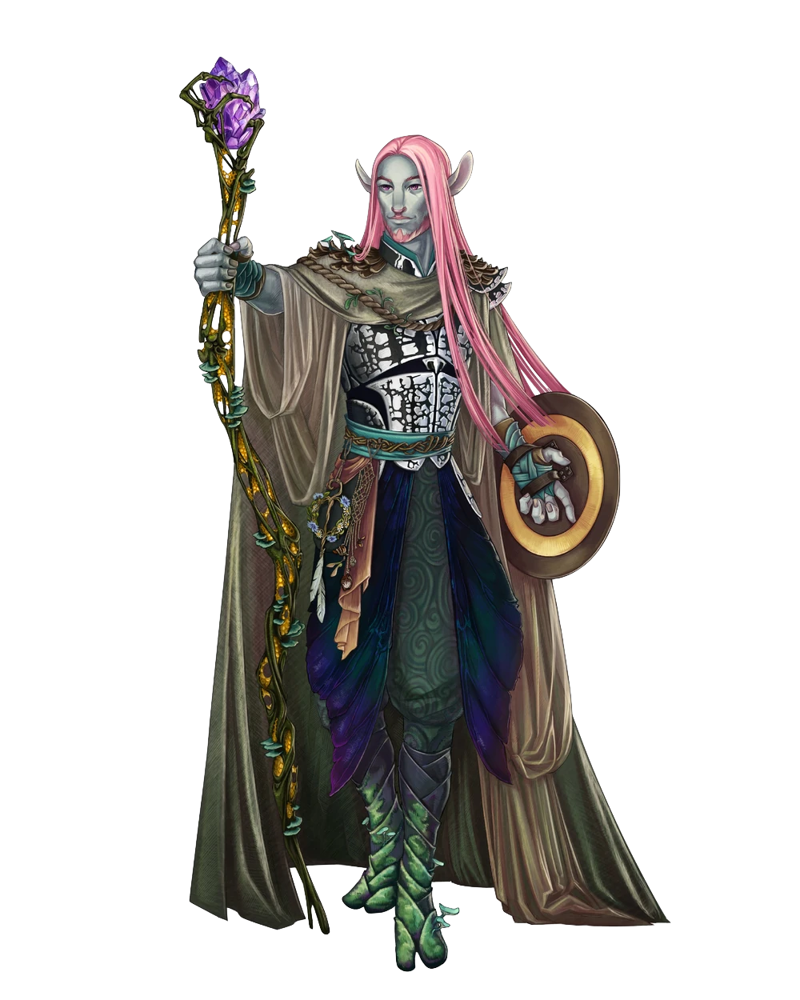
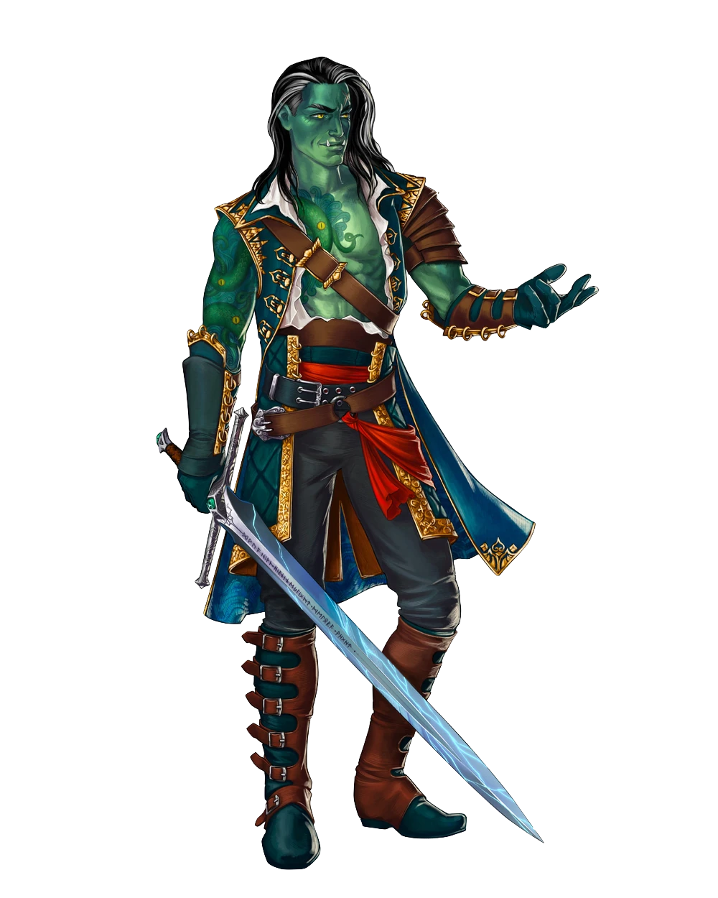
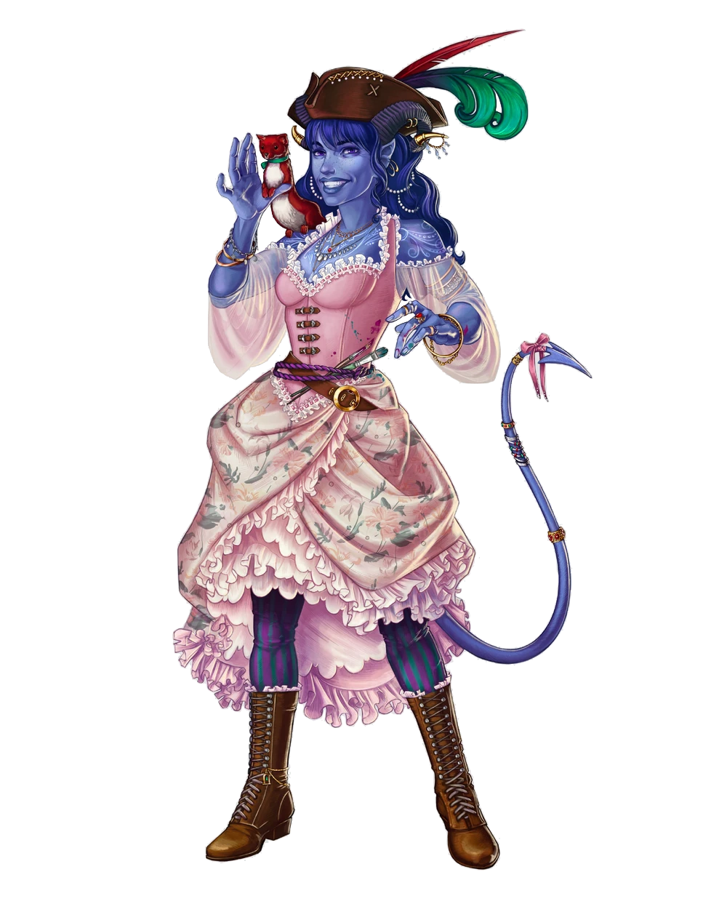
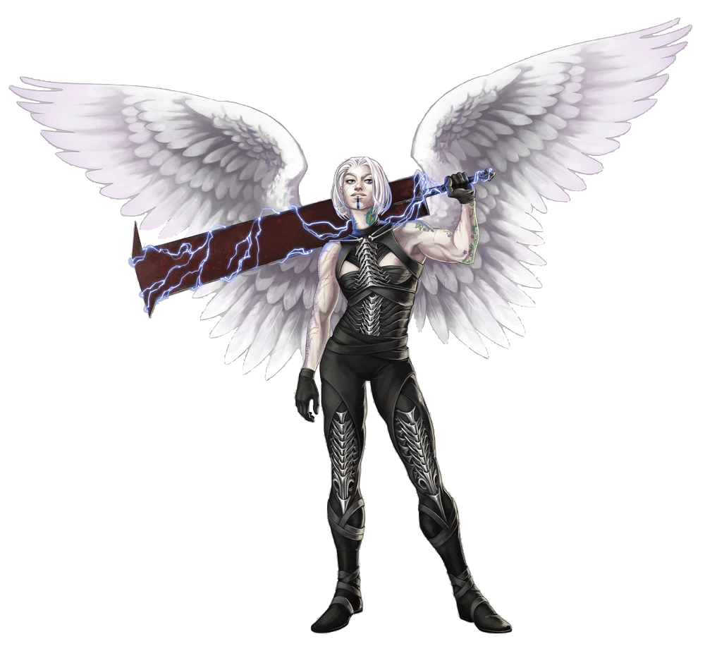
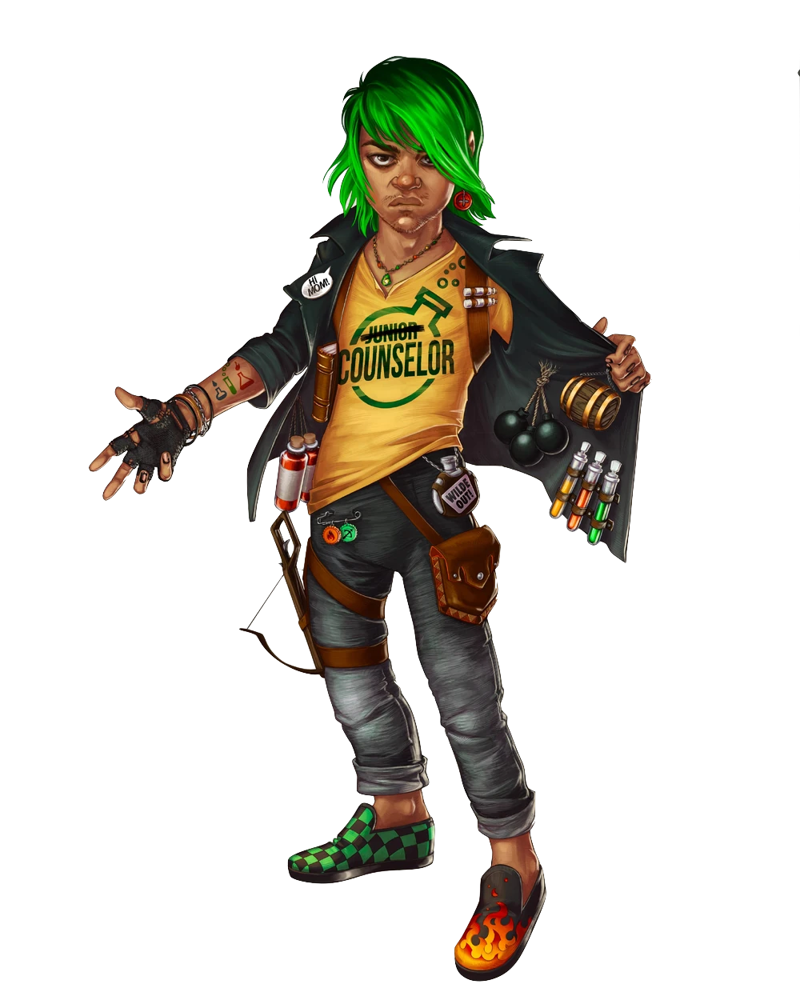
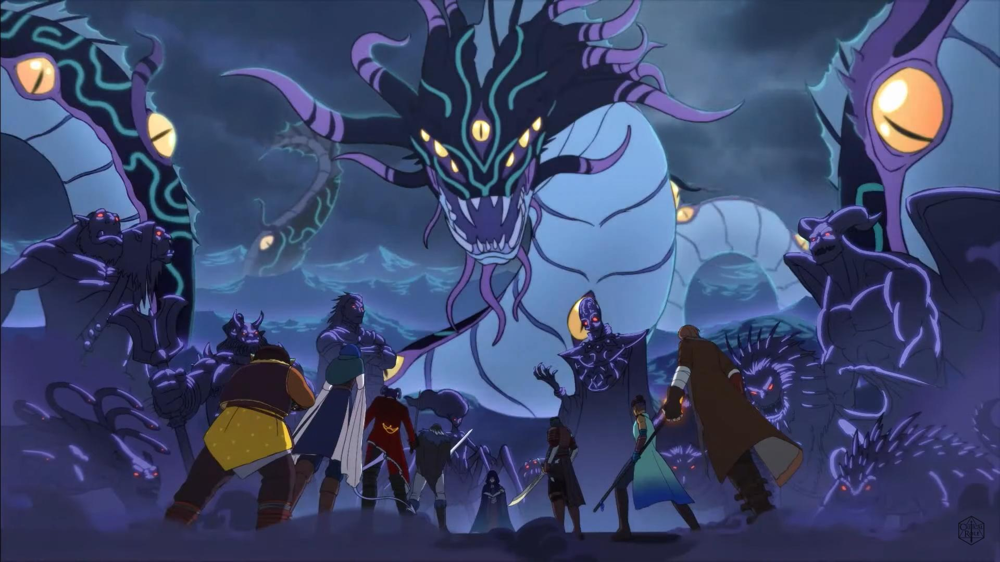
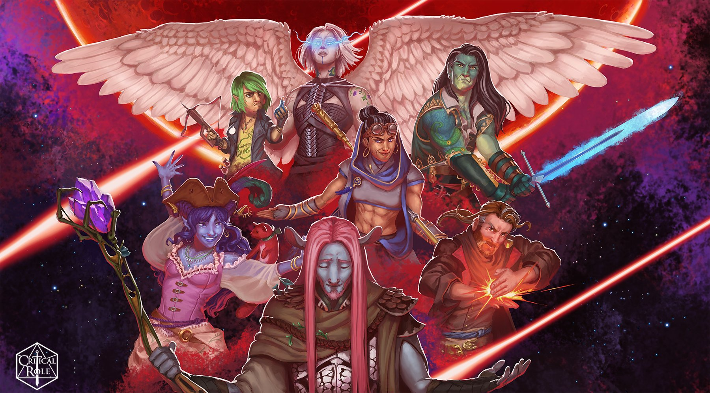

Mighty Nein ~ Critical Role Campaign Two
 Art By: @ornerine
TEXT HERE
The main characters are:
Beauregard Lionett 
Beauregard Lionett is a human monk of the Cobalt Soul. She originally worked as the bookkeeper for her family’s wine business in Kamordah. Seeking revenge or perhaps her parents’ attention, she began stealing and reselling the wine at a higher price. This escalated into other crimes, including extortion and trafficking.
When her father discovered her illegal activities, he bribed an archivist of the Cobalt Soul to “kidnap” her, avoiding direct confrontation and the shame she brought to the family. Six months into her training with the Cobalt Soul, Beau received a letter from her mother announcing the birth of her brother, Thoreau Lionett Jr. Beau saw this as a sign her parents no longer wanted contact with her. Believing they would stop paying for her training, she decided to leave and pursue her own path.
While traveling along the Amber Road, Beau met Jester and Fjord and joined their journey. On their way to study magic at the Soltryce Academy in Rexxentrum, the trio saved a fisherman’s daughter from a giant snake in Trostenwald.
Caduceus Clay 
Caduceus Clay is a devout follower of the Wildmother, a deity revered for her connection to nature and life. He hails from the dense Savalierwood, where his family has long served the sacred duty of protecting the graveyard nestled within it. For generations, they have safeguarded the resting place of the deceased, guided by their faith and devotion to the Wildmother, also known as Melora in some regions.
Around four to five years ago, Caduceus returned to his ancestral home in the Savalierwood, only to find it plagued by a spreading curse. In a desperate bid to find a cure, his parents, two sisters, and a brother set out on a quest, leaving Caduceus behind to maintain the graveyard. Known locally as the Bone Orchard, the sanctuary-like graveyard lies deep within the cursed woods, its stone church standing as a beacon of hope amidst the encroaching blight.
Caduceus now shoulders the responsibility of tending to this sacred place, a task fraught with peril as the cursed woods continue to creep closer with each passing day. In the face of this encroaching darkness, Caduceus draws strength from his faith in the Wildmother, knowing that his actions honor both his family’s legacy and the divine will of his deity.
Caleb
Widogast

Caleb Widogast, born Bren Aldric Ermendrud, is a human wizard and member of the Mighty Nein. Bren attended the Soltryce Academy at 15, dreaming of becoming a teacher. However, he fell under the abusive tutelage of Trent Ikithon, who conducted cruel experiments on Bren and two other students, Eadwulf Grieve and Astrid Becke, embedding crystals into their skin to enhance their magical abilities. The three were also trained as Volstrucker, tasked with interrogating and executing dissidents.
Trent manipulated their memories, making them believe their parents had betrayed the empire, leading to them killing their own parents. Bren broke down after hearing his parents’ screams during the murder and spent the next eleven years in the Vergesson Sanatorium. There, another patient restored his true memories, allowing him to escape. He adopted the alias Caleb Widogast and spent five years hiding from Trent, plagued by guilt over his past actions.
Caleb met Nott in a small jail, where they devised an escape plan and fled together. They survived through petty theft and con schemes, initially staying together out of convenience but eventually forming a strong bond.
Fjord 
Fjord is a half-orc warlock and paladin who grew up as an orphan in Port Damali on the Menagerie Coast, with no knowledge of his parents. He worked at the docks and later joined the crew of the Tide’s Breath under Captain Vandran, who became a father figure to him. Fjord rose to the position of first mate, but the ship was sabotaged by a fellow crew member, Sabian. During the ensuing chaos, Fjord made a desperate pact with the entity Uk’otoa to survive.
After washing ashore with new magical abilities and no memory of the pact, Fjord returned to Port Damali to investigate, but left due to suspicions about his survival. He then sought out Jester, who he knew had magical knowledge, and they decided to travel together to the Soltryce Academy in Rexxentrum. Along their journey, they met Beauregard Lionett in Trostenwald shortly before joining the rest of their group.
Jester Lavorre 
Jester Lavorre, a tiefling cleric of the Traveler and member of the Mighty Nein, spent her childhood confined to the Lavish Chateau by her mother, who aimed to shield her from the outside world. Encouraged to express herself through art, Jester often observed Nicodranas from her balcony.
At thirteen, she befriended a boy from the streets, only to face accusations from Lord Robert Sharpe, a client of her mother’s. Feeling misunderstood, Jester found solace in the Traveler’s friendship. In her late teens, encouraged by the Traveler, she ventured into the world, playing tricks and facing danger.
A confrontation with Sharpe led to Jester realizing her mother’s secret efforts to expose his connections to the Revelry. Fearing for Jester’s safety, her mother urged her to leave. Jester departed with the Traveler. While journeying towards the Soltryce Academy in Rexxentrum, where Fjord planned to study magic, Jester met Beauregard along the Amber Road. They soon encountered the others who would form the Mighty Nein.
Mollymauk Tealeaf
Mollymauk Tealeaf is a mysterious tiefling with a fragmented past and a penchant for adventure. Awakening with no memories, he found solace and purpose among the performers of The Fletching and Moondrop Traveling Carnival of Curiosities. Under the guidance of the fortune teller, Lestera, Molly embraced carnival life, commemorating his experiences with tattoos and honing his skills in card-reading and sleight of hand. Adopting the name “Mollymauk Tealeaf,” he became a beloved member of the troupe, known for his charisma and flair as “The Ice Spinner” during performances.
Throughout his time with the carnival, Molly embarked on sporadic solo adventures, often cloaked in secrecy under the guise of “choir practice.” His loyalty to Lestera and the carnival was unwavering, even after her passing, when he inherited her role as the carnival’s fortune teller. Guided by Lestera’s legacy, Molly welcomed newcomers like Yasha Nydoorin and fostered a sense of belonging within the group.
Veth Brenatto
Revvetha “Veth” Brenatto, a halfling with a knack for both rogue tactics and wizardry, underwent a transformative journey that shaped her into the character known as Nott the Brave for a time. Originally born as Revvetha “Veth” Smyt’hh in the town of Felderwin, she faced ridicule and abuse from her surroundings, including her own siblings who tormented her for her differences. Despite these challenges, she found love with a halfling named Yeza Brenatto, with whom she eventually married and had a son named Luc.
Tragedy struck when her family was kidnapped by a goblin clan led by Drekkit and Khaaz. In a desperate bid to save her loved ones, Veth sacrificed herself, only to undergo a harrowing transformation orchestrated by a cruel spellcaster named Isharnai. Emerging from the ordeal as a goblin named Nott, she was thrust into a life of servitude within the goblin clan, even taking on the role of Khaaz’s assistant as a torturer. After a brief stint in jail for theft, she met Caleb, who became both a companion and a friend on their subsequent travels.
Yasha Nydoorin 
Yasha Nydoorin, a protector aasimar barbarian, was raised by the Dolorav tribe in the Iothia Moorland after her original clan was decimated. Under the tribe’s harsh upbringing, she was groomed as a weapon, known as “Orphan Maker,” bound by a blood oath called “The Marking.” Despite this, she fell in love with Zuala, defying tribal customs and facing death as a consequence. Surviving the ordeal, she fled, her hair turning black as she embraced her fallen nature.
During her flight, Yasha was ensnared by the cambion Obann, enduring magical enslavement until finding herself at an altar to The Stormlord, who became her guiding force. She crossed paths with Mollymauk Tealeaf, finding solace in his companionship and joining The Fletching and Moondrop Traveling Carnival of Curiosities as security. Known as “The Brute,” Yasha found acceptance among the carnies, forming strong bonds until parting ways after confronting a corrupt lawmaster in Nogvurot.
The side/guest characters are:
Calianna Mordsson
Calianna Mordsson is a half-elven sorcerer with draconic heritage. She was born in a bustling port city but spent little time there during her early years. Orphaned and left to fend for herself on the streets, she was eventually taken in by a mysterious cult that promised her she was destined for greatness. They raised her, nurturing her magical abilities and reinforcing her belief in her unique importance.
Keg
Keg is a stout fighter hailing from the rough-and-tumble town of Shadycreek Run. A seasoned warrior, she once belonged to the notorious mercenary group known as the Iron Shepherds. Born and raised in the unforgiving environment of Shadycreek Run, Keg’s life has been shaped by the town’s harsh realities. At some point in her life, Keg married a woman, but the marriage was abruptly called off after just an hour. During her time with the Iron Shepherds, she became familiar with her comrades Dwelma, Wohn, Protto, Lorenzo, and Ruzza. Despite her long tenure with the group, Keg never fully grasped the true extent of Lorenzo’s or Ruzza’s abilities.
Luc Brenatto 
Luc Brenatto, son of Yeza and Veth Brenatto from Felderwin, initially thrived at the Wildemount Wildlings Camp in Nicodranas, transitioning from a talented camper to a youthful instructor in stealth, spellcraft, and alchemy. His life took a tumultuous turn after a transformative trip to the Feywild prematurely aged him into a rebellious teenager, straining his relationship with his parents who sought to protect him.
In 843 PD, Luc’s frustrations peaked, leading him to run away from home. Despite efforts from Veth and her ally Kingsley Tealeaf to find him, tensions persisted. During the apogee solstice, conflicts escalated when Luc was denied the opportunity to lead young adventurers against sea creatures in Nicodranas. His subsequent involvement with the Mighty Nein and his daring escape via Caleb’s Teleportation Circle marked a pivotal moment, highlighting his desire for independence and adventure amidst familial discord.
Nila
Nila is a firbolg druid and a member of the Guiatao Clan. Despite her potential, the clan did not depend on her or her powers, preferring to keep her occupied at a distance. She was assigned the task of tending to the mosses surrounding their tribe, a hardy and easy-to-grow plant. This seemingly trivial duty ignited a desire in Nila to prove her worth both to herself and to her tribe, driving her to seek opportunities to demonstrate that she could be relied upon in a greater capacity.
Rab “Aggy” Agg
Rab Agg, a dwarf practicing the ways of a monk, crossed paths with the Mighty Nein when they encountered him deep within the Rexxentrum Archive of the Cobalt Soul. This meeting was facilitated by a monk outside who had previously enlisted the aid of an investigator friend to resolve a personal matter.
Reani
Reanminere, known as Reani, is an aasimar druid with a rich history. Abandoned in Nicodranas as a child, she was raised by an alchemist named Landon, who became a father figure to her. Her angelic guide, Samliel, began communicating with her in dreams during her childhood. After an encounter with fey, Reani gained druidic powers. She grew up in Nicodranas, where she once snuck into the Lavish Chateau to see the Ruby of the Sea perform.
As an adult, Reani traveled widely, helping people and fighting evil. Guided by Samliel to Uthodurn, she became a vigilante known as Ivae’ess, battling the city’s criminal underworld in various animal forms while remaining anonymous. She befriended the local blacksmith, Umagorn Smeltborne, and secured a small, plant-filled home on the Liber Disk through trade. A romance with a Glassblade named Fen began after he saved her life. However, their relationship ended when a failed mission into the Savalirwood left Reani as one of the only survivors, and her increasing dedication to dangerous missions strained their bond. Reani continues to live in Uthodurn, committed to her duty to Samliel.
Shakäste
Shakäste, known by his alias “Hush,” hails from the Marrow Valley near the city of Alfield. Raised amidst the vibrant energy of his homeland, he frequently aids and guides the community, particularly in Alfield and its surrounding areas. His charisma and wisdom extend beyond his local engagements; in the Menagerie Coast, he has made a name for himself as a captivating motivational speaker, consistently drawing large audiences with his inspiring rhetoric.
Unbeknownst to many, Shakäste is a covert member of the enigmatic Golden Grin organization. Under the guise of “Hush,” his daring exploits have become the stuff of legend, chronicled in the popular novellas titled Heroic Deeds of the Golden Grin, circulated anonymously throughout Deastok. Initially dismissed as mere fiction by the Cobalt Soul, Shakäste’s existence was later confirmed, sparking intrigue and speculation within the secretive ranks of the organization. Adding to his mystique is his familiar, the Grand Duchess Anastasia Nikolaevna, known affectionately as “Stacy.” Often taking the form of an abrahum, a mesmerizing “dark, midnight” hummingbird, she symbolizes the enigmatic and multifaceted nature of Shakäste himself.
Twiggy
Twiggy is a gnome rogue from Port Damali, a city known for its bustling trade and intrigue. Orphaned at a young age, Twiggy has had to rely on her wits and agility to survive. During her time in Port Damali, she stole a powerful magical artifact she calls the Happy Fun Ball of Tricks from a dubious location, possibly the Exalted Collection Auction House. She took this artifact to prevent it from falling into the hands of Sir Cadigan, a malevolent figure who had previously imprisoned her in a cage. While in captivity, Twiggy honed her skills in illusion magic, which eventually enabled her daring escape.
Fleeing Port Damali to evade those pursuing her for the artifact, Twiggy stowed away on various ships. During her journey, she discovered that manipulating certain rings on the Happy Fun Ball could produce coins and create distracting flashes and noises. After a series of escapes and hiding on different vessels, Twiggy ultimately found herself on Darktow Isle. There, she hid in a box that was loaded onto the Squalleater and remained concealed in the cargo hold for about a week before being discovered by the adventuring group known as the Mighty Nein.
Arc One:
Episodes 1 -
Art By: @
TEXT HERE
**** ~ Episode 1
Encounter:
- 2 Undead Husk
# Round 1
add_damage('Jester', 'Radiant', 18)
# Guiding Bolt
add_damage('Fjord', 'Slashing', 11)
add_damage('Caleb', 'Cold', 9)
# Chromatic Orb
add_damage('Beau', 'Bludgeoning', 11)
add_damage('Molly', 'Slashing', 8)
add_damage('Molly', 'Cold', 1)
# Crimson Rite ~ Rite of the Frozen
# Round 2
add_damage('Jester', 'Necrotic', 3)
# Toll the Dead
add_enemy_damage('Undead Husk', 'Bludgeoning', 15)
update_damage_taken('Beau', 15)
add_damage('Fjord', 'Slashing', 12)
add_enemy_damage('Undead Husk', 'Bludgeoning', 8)
update_damage_taken('Molly', 8)
add_damage('Yasha', 'Slashing', 12)
increment_kills('Yasha')
# Undead Husk
add_damage('Fjord', 'Slashing', 12)
add_damage('Fjord', 'Necrotic', 5)
# Hex
add_damage('Veth', 'Piercing', 14)
add_damage('Molly', 'Slashing', 10)
add_damage('Molly', 'Cold', 3)
# Crimson Rite ~ Rite of the Frozen
add_damage('Beau', 'Bludgeoning', 19)
increment_kills('Beau')
# Undead Husk
update_healing('Jester', 17)
# Cure Wounds on Beau and Molly**** ~ Episode 3
Encounter:
- 2 Undead Husks
# Round 1
add_damage('Beau', 'Bludgeoning', 8)
add_damage('Caleb', 'Cold', 9)
# Chromatic Orb
add_damage('Molly', 'Slashing', 22)
increment_kills('Molly')
# Undead Husk
add_enemy_damage('Undead Husk', 'Bludgeoning', 5)
update_damage_taken('Molly', 5)
add_damage('Veth', 'Piercing', 10)
add_damage('Fjord', 'Force', 9)
# Eldritch Blast
# Round 2
add_damage('Beau', 'Bludgeoning', 17)
add_damage('Caleb', 'Fire', 4)
# Fire Bolt
add_damage('Molly', 'Slashing', 9)
add_enemy_damage('Undead Husk', 'Bludgeoning', 20)
update_damage_taken('Molly', 20)
update_times_knocked_unconscious('Molly')
# Knocked unconscious by a heavy blow from the Undead Husk
increment_kills('Veth')
# Undead Husk**** ~ Episode 3
Encounter:
- Kylre the Nergaliid
- Toya
- 3 Imps
# Round 1
add_damage('Beau', 'Bludgeoning', 7)
add_damage('Fjord', 'Force', 19)
# Eldritch Blast
# Round 2
add_damage('Molly', 'Slashing', 8)
add_damage('Molly', 'Cold', 1)
# Crimson Rite ~ Rite of the Frozen
add_enemy_damage('Imp', 'Piercing', 5)
add_enemy_damage('Imp', 'Poison', 4)
update_damage_taken('Molly', 9)
add_damage('Molly', 'Slashing', 7)
increment_kills('Molly')
# Imp
add_enemy_damage('Kylre', 'Psychic', 4)
# Siphon Life
update_damage_taken('Caleb', 4)
add_damage('Beau', 'Bludgeoning', 8)
add_damage('Veth', 'Slashing', 12)
add_damage('Fjord', 'Slashing', 14)
add_damage('Fjord', 'Psychic', 1)
# Wrathful Smite
# Round 3
add_enemy_damage('Imp', 'Piercing', 13)
add_enemy_damage('Imp', 'Poison', 11)
update_damage_taken('Jester', 12)
update_damage_taken('Caleb', 12)
update_times_knocked_unconscious('Caleb')
# Knocked unconscious by the Imp's strike
add_damage('Molly', 'Psychic', 4)
# Vicious Mockery
add_enemy_damage('Kylre', 'Piercing', 11)
update_damage_taken('Veth', 11)
add_damage('Veth', 'Slashing', 11)
add_damage('Fjord', 'Slashing', 11)
add_damage('Fjord', 'Psychic', 5)
# Wrathful Smite
update_healing('Jester', 9)
# Cure Wounds on herself
# Caleb succeeds on a death save
add_damage('Fjord', 'Force', 14)
# Edlritch Blast
increment_kills('Fjord')
# Kylre
# Round 4
add_enemy_damage('Imp', 'Piercing', 7)
add_enemy_damage('Imp', 'Poison', 14)
update_damage_taken('Fjord', 21)
update_times_knocked_unconscious('Fjord')
# Knocked unconcious by the Imp's strike
add_damage('Jester', 'Radiant', 6)
# Word of Radiance
increment_kills('Jester')
# Imp
# Caleb succeeds on a death save
# Fjord fails a death save
# Round 5
add_damage('Beau', 'Bludgeoning', 12)
increment_kills('Beau')
# Imp
update_healing('Jester', 5)
# Cure Wounds on Fjord, bringing him back to consciousness
# Caleb fails a death save
update_healing('Veth', 1)
# Mouth to mouth on Caleb, bringing him back to consciousness**** ~ Episode 5
Encounter:
- 1 Gnoll Pack Leader
- 5 Gnolls
- 4 Skeleton Gnolls
# Surprise Round
add_damage('Molly', 'Psychic', 3)
# Vicious Mockery
add_damage('Jester', 'Force', 10)
# Spiritual Weapon ~ Lollipop
increment_kills('Jester')
# Skeleton Gnoll
# Round 1
add_damage('Beau', 'Piercing', 6)
add_damage('Jester', 'Radiant', 4)
# Sacred Flame
add_damage('Caleb', 'Fire', 19)
# Scorching Ray 3/3
add_damage('Veth', 'Piercing', 12)
update_damage_taken('Veth', 5)
add_enemy_damage('Gnoll', 'Piercing', 6)
update_damage_taken('Beau', 6)
# Round 2
add_damage('Fjord', 'Piercing', 9)
add_enemy_damage('Gnoll', 'Piercing', 9)
update_damage_taken('Veth', 9)
add_damage('Fjord', 'Force', 14)
# Eldritch Blast
add_enemy_damage('Gnoll Pack Leader', 'Slashing', 12)
update_damage_taken('Fjord', 12)
add_damage('Fjord', 'Cold', 10)
# Armor of Agathys
add_damage('Molly', 'Slashing', 9)
add_enemy_damage('Gnoll', 'Bludgeoning', 5)
update_damage_taken('Jester', 5)
add_damage('Jester', 'Cold', 9)
# Hellish Rebuke
add_damage('Jester', 'Radiant', 9)
# Guiding Bolt
add_damage('Jester', 'Force', 9)
# Spiritual Weapon ~ Lollipop
add_enemy_damage('Gnoll', 'Bludgeoning', 6)
update_damage_taken('Jester', 6)
# Round 3
add_damage('Beau', 'Bludgeoning', 15)
increment_kills('Beau')
# Skeleton Gnoll
increment_kills('Beau')
# Gnoll
add_enemy_damage('Gnoll', 'Piercing', 14)
update_damage_taken('Jester', 8)
update_damage_taken('Fjord', 6)
add_enemy_damage('Gnoll Pack Leader', 'Slashing', 10)
update_damage_taken('Fjord', 10)
add_damage('Molly', 'Slashing', 5)
add_damage('Molly', 'Radiant', 2)
# Crimson Rite ~ Rite of the Dawn
add_damage('Caleb', 'Fire', 11)
# Chromatic Orb
# Round 4
add_damage('Beau', 'Bludgeoning', 27)
increment_kills('Beau')
# Gnoll
update_damage_taken('Veth', 4)
add_damage('Jester', 'Necrotic', 26)
# Inflict Wounds
# Round 5
add_enemy_damage('Gnoll Pack Leader', 'Piercing', 29)
update_damage_taken('Veth', 8)
update_times_knocked_unconscious('Veth')
# Knocked unconscious by the Gnoll Pack Leader's bow shot
update_damage_taken('Molly', 21)
update_times_knocked_unconscious('Molly')
# Knocked unconscious by the Gnoll Pack Leader's bow shot
update_healing('Jester', 22)
# Cure Wounds on Nott and Molly bringing them back to consciousness**** ~ Episode 6
Encounter:
- 5 Gnolls
- 4 Hyenas
# Surprise Round
add_damage('Jester', 'Force', 9)
# Spiritual Weapon ~ Lollipop
add_damage('Fjord', 'Force', 15)
# Eldritch Blast
add_damage('Caleb', 'Fire', 7)
# Fire Bolt
increment_kills('Caleb')
# Gnoll
add_damage('Veth', 'Piercing', 14)
increment_kills('Veth')
# Gnoll
add_damage('Molly', 'Psychic', 3)
# Vicious Mockery
# Round 2
add_damage('Jester', 'Force', 9)
# Spiritual Weapon ~ Lollipop
add_damage('Jester', 'Necrotic', 2)
# Toll the Dead
add_enemy_damage('Hyena', 'Piercing', 10)
update_damage_taken('Fjord', 10)
add_damage('Fjord', 'Cold', 20)
# Armor of Agathys
increment_kills('Fjord')
# Hyena
increment_kills('Fjord')
# Hyena
add_damage('Fjord', 'Slashing', 15)
# Round 3
add_damage('Molly', 'Slashing', 12)
increment_kills('Molly')
# Gnoll
add_enemy_damage('Gnoll', 'Piercing', 8)
update_damage_taken('Fjord', 8)
add_damage('Beau', 'Bludgeoning', 8)
add_damage('Jester', 'Necrotic', 7)
# Toll the Dead
increment_kills('Jester')
# Gnoll
add_enemy_damage('Hyena', 'Piercing', 2)
update_damage_taken('Molly', 2)
add_damage('Fjord', 'Slashing', 11)
increment_kills('Fjord')
# Hyena
add_damage('Molly', 'Slashing', 8)
increment_kills('Molly')
# Hyena
# Round 4
add_damage('Beau', 'Bludgeoning', 10)
add_damage('Veth', 'Slashing', 13)
increment_kills('Veth')
# Gnoll
update_healing('Jester', 7)
# Cure Wounds on Fjord**** ~ Episode 7
Encounter:
- 3 Gnolls
- 2 Hyenas
- 1 Skeleton Gnoll
# Surprise Round
add_damage('Veth', 'Piercing', 11)
add_damage('Molly', 'Psychic', 3)
# Vicious Mockery
add_damage('Fjord', 'Force', 16)
# Eldritch Blast
# Round 1
add_damage('Veth', 'Piercing', 8)
increment_kills('Veth')
# Gnoll
add_damage('Molly', 'Slashing', 8)
add_damage('Fjord', 'Force', 16)
# Eldritch Blast
increment_kills('Fjord')
# Gnoll
add_enemy_damage('Hyena', 'Piercing', 3)
update_damage_taken('Molly', 2)
update_damage_taken('Veth', 1)
add_damage('Shakäste', 'Thunder', 12)
# Thunderwave
# Round 2
add_damage('Beau', 'Bludgeoning', 10)
increment_kills('Beau')
# Hyena
add_damage('Molly', 'Slashing', 22)
increment_kills('Molly')
# Skeleton Gnoll
increment_kills('Molly')
# Hyena
add_enemy_damage('Gnoll', 'Piercing', 4)
update_damage_taken('Caleb', 4)
add_damage('Fjord', 'Force', 11)
# Eldritch Blast
increment_kills('Fjord')
# Gnoll**** ~ Episode 7
Encounter:
- 1 Gnoll Pack Leader
- 4 Gnolls
- 2 Skeleton Gnolls
# Pre-Initiative
add_damage('Fjord', 'Force', 14)
# Eldritch Blast
add_enemy_damage('Gnoll', 'Piercing', 10)
update_damage_taken('Fjord', 10)
add_damage('Veth', 'Piercing', 5)
add_damage('Fjord', 'Force', 13)
# Eldritch Blast
increment_kills('Fjord')
# Gnoll (shared with Nott)
increment_kills('Veth')
# Gnoll (shared with Fjord)
add_damage('Shakäste', 'Radiant', 1)
# Sacred Flame
# Round 1
add_damage('Shakäste', 'Cold', 3)
# Frostbite
add_damage('Beau', 'Bludgeoning', 20)
increment_kills('Beau')
# Skeleton Gnoll
# Round 2
update_healing('Shakäste', 15)
# Aid on himself, Jester, and Beau
add_damage('Molly', 'Slashing', 21)
increment_kills('Molly')
# Skeleton Gnoll
add_damage('Veth', 'Piercing', 12)
increment_kills('Veth')
# Gnoll
add_damage('Jester', 'Necrotic', 6)
# Toll the Dead
add_damage('Caleb', 'Fire', 20)
# Scorching Ray 3/3
add_damage('Fjord', 'Force', 8)
# Eldritch Blast
# Round 3
add_enemy_damage('Gnoll Pack Leader', 'Bludgeoning', 11)
update_damage_taken('Beau', 11)
add_enemy_damage('Gnoll', 'Piercing', 12)
update_damage_taken('Molly', 4)
update_damage_taken('Jester', 8)
add_damage('Molly', 'Slashing', 20)
update_damage_taken('Molly', 3)
add_damage('Jester', 'Slashing', 4)
add_damage('Veth', 'Piercing', 15)
increment_kills('Jester')
# Gnoll Pack Leader (shared with Nott)
increment_kills('Veth')
# Gnoll Pack Leader (shared with Jester)
update_healing('Fjord', 7)
# Hexblade's Curse
add_damage('Caleb', 'Thunder', 8)
# Chromatic Orb
add_damage('Fjord', 'Force', 15)
# Eldritch Blast
increment_kills('Fjord')
# Gnoll
# Round 4
add_damage('Shakäste', 'Radiant', 6)
# Sacred Flame
add_damage('Beau', 'Bludgeoning', 5)
increment_kills('Beau')
# Gnoll**** ~ Episode 7
Encounter:
- 1 Manticore
- 1 Yeenoghu Priest
# Round 1
add_damage('Molly', 'Psychic', 1)
# Vicious Mockery
add_damage('Fjord', 'Slashing', 13)
add_enemy_damage('Manticore', 'Slashing', 14)
add_enemy_damage('Manticore', 'Piercing', 10)
update_damage_taken('Jester', 9)
update_damage_taken('Fjord', 15)
add_damage('Jester', 'Cold', 13)
# Hellish Rebuke
add_damage('Fjord', 'Cold', 20)
# Armor of Agathys
add_damage('Shakäste', 'Force', 4)
# Spiritual Weapon ~ Estelle Getty
# Round 2
add_damage('Molly', 'Psychic', 4)
# Vicious Mockery
add_damage('Jester', 'Radiant', 6)
# Sacred Flame
add_damage('Veth', 'Slashing', 17)
increment_kills('Veth')
# Manticore Cub
add_enemy_damage('Manticore', 'Slashing', 9)
add_enemy_damage('Manticore', 'Piercing', 21)
update_damage_taken('Veth', 30)
update_times_knocked_unconscious('Veth')
# Knocked unconscious by the Manticore's
add_damage('Caleb', 'Cold', 15)
# Chromatic Orb
add_enemy_damage('Yeenoghu Priest', 'Necrotic', 14)
# Inflict Wounds
update_damage_taken('Jester', 14)
update_times_knocked_unconscious('Jester')
# Knocked unconscious by the priest's Inflict Wounds
add_damage('Shakäste', 'Radiant', 3)
# Sacred Flame
# Round 3
update_healing('Fjord', 8)
# Regular potion on Jester, bringing her back to consciousness
update_healing('Jester', 8)
# Cure Wounds on Nott, bringing her back to consciousness
add_damage('Beau', 'Bludgeoning', 16)
add_damage('Caleb', 'Fire', 10)
# Fire Bolt
increment_kills('Caleb')
# Yeenoghu Priest
add_damage('Shakäste', 'Force', 7)
# Spiritual Weapon ~ Estelle Getty
add_damage('Shakäste', 'Radiant', 6)
# Sacred Flame
increment_kills('Shakäste')
# ManticoreArc One Out of Combat Actions
# Beau meets Expositor Dairon
add_enemy_damage('Dairon', 'Bludgeoning', 17)
update_damage_taken('Beau', 17)
add_damage('Beau', 'Bludgeoning', 31)
# Ambushing Hyenas
add_damage('Caleb', 'Fire', 1)
# Firebolt
add_damage('Jester', 'Radiant', 4)
# Sacred Flame
increment_kills('Jester')
# Hyena
add_damage('Molly', 'Slashing', 7)
add_damage('Molly', 'Radiant', 3)
# Crimson Rite ~ Rite of the Dawn
increment_kills('Molly')
# Hyena
add_damage('Veth', 'Piercing', 13)
increment_kills('Veth')
# Hyena
# Gnolls in the mines
add_damage('Veth', 'Piercing', 11)
add_enemy_damage('Gnoll', 'Piercing', 6)
update_damage_taken('Veth', 6)
add_damage('Jester', 'Radiant', 10)
# Guiding Bolt
add_damage('Fjord', 'Force', 9)
# Eldritch Blast
add_damage('Molly', 'Psychic', 3)
# Vicious Mockery
add_damage('Veth', 'Lightning', 7)
# Shocking Grasp
increment_kills('Veth')
# Gnoll
add_enemy_damage('Gnoll', 'Piercing', 4)
update_damage_taken('Fjord', 4)
add_damage('Beau', 'Bludgeoning', 10)
increment_kills('Beau')
# GnollMighty Nein Reunited
 Art By: @
Six months have passed since the Mighty Nein, the legendary group of adventurers, went their separate ways. Despite their heroics, few in the wider world know of their accomplishments. Veth Brenatto, now settled in Nicodranas with her husband Yeza and their son Luc, has started a new venture – an adventurer’s camp called The Wildemount Wildlings. Yeza supports her by running his new apothecary, Brenatto’s Better Self. Meanwhile, in Zadash, Beau and Yasha have built a life together. Yasha has embraced homemaking and plans to teach self-defense at Veth’s camp, while Beau, frustrated with mundane tasks at the Cobalt Soul, suspects the Cerberus Assembly is up to something.
Caleb Widogast resides in Rexxentrum, guest lecturing at the Soltryce Academy. Though Beau urges him to take a permanent teaching position to aid their efforts against the Assembly, Caleb remains hesitant. He is preparing to teach a magic class at Veth’s camp and anticipates a visit from Essek. On the ocean near the Swavain Islands, Fjord, Jester, and Kingsley sail on their ship, the Nein Heroez, running a new venture called Stone’s Throw Shipping. When an unexpected storm threatens, Fjord’s former warlock patron, Uk’otoa, sends his minions to reclaim a powerful artifact. Despite a fierce battle, Fjord relinquishes the crystal to save Jester, setting the stage for a new quest.
Jester alerts the rest of the Mighty Nein about the imminent threat of Uk’otoa’s release. Caleb gathers the team and they reunite on the Twinward Isles. Their mission is to prevent Uk’otoa from being freed. They deduce the location of the final temple and teleport to Nicodranas, where they rest before heading to Cyrios End Forest. Through a combination of polymorphing and strategic planning, they reach the temple, prepared for an ambush. In a climactic battle, they confront Thoonum and Uk’otoa’s scions, but the final seal is broken, unleashing the Great Leviathan.
To contain Uk’otoa, Fjord makes a pact with the Cloaked Serpent, the Betrayer God who originally sealed Uk’otoa. Fjord takes up a divine weapon, the Fang of the Spire King, and with the help of his friends, defeats Uk’otoa. However, the task isn’t over as Uk’otoa’s presence lingers. Fjord dives into the ocean, using his new powers to seal Uk’otoa once more. The Cloven Crystals, the keys to Uk’otoa’s release, are redistributed to ensure they remain hidden. The Mighty Nein return to their lives, each finding new purposes and continuing their legacies while always staying connected.
**Surrendering to the Leviathan*
Encounter:
- Thoonum the Storm Giant
- 1 Scion Mage
- 7 Scions
# Pre-Initiative
add_enemy_damage('Thoonum', 'Lightning', 91)
# Lightning Strike
update_damage_taken('Fjord', 30)
update_damage_taken('Jester', 61)
add_damage('Jester', 'Cold', 21)
# Hellish Rebuke
# Round 1
add_damage('Kings', 'Slashing', 24)
add_damage('Kings', 'Fire', 16)
# Crimson Rite ~ Rite of the Flame
add_enemy_damage('Thoonum', 'Thunder', 76)
# Thunderous Slap
update_damage_taken('Kings', 38)
update_damage_taken('Jester', 38)
add_damage('Jester', 'Necrotic', 54)
# Inflict Wounds
add_enemy_damage('Thoonum', 'Bludgeoning', 42)
update_damage_taken('Jester', 42)
add_enemy_damage('Scion', 'Piercing', 8)
add_enemy_damage('Scion', 'Slashing', 28)
update_damage_taken('Kings', 18)
update_damage_taken('Jester', 18)
update_times_knocked_unconscious('Jester')
# Knocked unconscious by the Scion's attacks
update_healing('Fjord', 40)
# Cure Wounds on Jester bringing her back to consciousnessBreaking the Final Seal, Uk’otoa Unleashed
Encounter:
- Thoonum the Storm Giant
- 1 Scion Mage
- 5 Scions
# Round 1
add_damage('Beau', 'Piercing', 6)
add_damage('Fjord', 'Force', 55)
# Eldritch Blast 3/4
add_damage('Jester', 'Bludgeoning', 28)
# Earthquake
update_damage_taken('Yasha', 6)
update_damage_taken('Kings', 6)
add_damage('Caleb', 'Force', 76)
# Disintegrate
add_damage('Caleb', 'Lightning', 15)
# Stormrider Boots
add_damage('Beau', 'Bludgeoning', 27)
# Round 2
add_damage('Kings', 'Slashing', 59)
add_damage('Kings', 'Radiant', 8)
# Crimson Rite ~ Rite of the Dawn
add_damage('Beau', 'Force', 13)
# Belabor
add_damage('Veth', 'Piercing', 46)
update_damage_taken('Veth', 7)
# Round 3
add_damage('Beau', 'Bludgeoning', 41)
add_damage('Caleb', 'Fire', 85)
# Widogast's Web of Fire
add_damage('Veth', 'Piercing', 52)
increment_kills('Veth')
# Thoonum
add_damage('Fjord', 'Force', 74)
# Eldritch Blast 4/4
add_damage('Yasha', 'Slashing', 55)
add_damage('Yasha', 'Radiant', 17)
# Radiant Soul
increment_kills('Yasha')
# Scion Mage
add_damage('Jester', 'Radiant', 19)
# Guiding BoltThe Fall of the Great Leviathan
Encounter:
- Uk’otoa
# Round 1
add_enemy_damage("Uk'otoa", 'Bludgeoning', 292)
# Tidal Wave
update_damage_taken('Fjord', 45)
update_damage_taken('Jester', 45)
update_damage_taken('Caleb', 45)
update_damage_taken('Veth', 45)
update_damage_taken('Beau', 45)
update_damage_taken('Kings', 45)
update_damage_taken('Yasha', 22)
add_damage('Fjord', 'Slashing', 22)
add_enemy_damage("Uk'otoa", 'Bludgeoning', 19)
add_enemy_damage("Uk'otoa", 'Acid', 5)
update_damage_taken('Fjord', 24)
add_damage('Kings', 'Slashing', 32)
add_damage('Kings', 'Fire', 20)
# Crimson Rite ~ Rite of the Flame
add_damage('Beau', 'Bludgeoning', 44)
update_healing('Caleb', 26)
# Superior Healing Potion on himself
add_damage('Veth', 'Piercing', 81)
add_damage('Jester', 'Radiant', 11)
# Dawn
add_damage('Kings', 'Psychic', 6)
# Brand of Castigation
# Round 2
add_damage('Yasha', 'Slashing', 21)
add_enemy_damage("Uk'otoa", 'Piercing', 30)
add_enemy_damage("Uk'otoa", 'Bludgeoning', 36)
add_enemy_damage("Uk'otoa", 'Acid', 22)
update_damage_taken('Beau', 30)
update_damage_taken('Fjord', 34)
update_damage_taken('Yasha', 24)
add_damage('Fjord', 'Radiant', 9)
# Star Razor
add_damage('Fjord', 'Cold', 46)
# Cone of Cold
add_damage('Beau', 'Bludgeoning', 10)
add_damage('Kings', 'Slashing', 41)
add_damage('Kings', 'Fire', 19)
# Crimson Rite ~ Rite of the Flame
add_enemy_damage("Uk'otoa", 'Bludgeoning', 20)
add_enemy_damage("Uk'otoa", 'Acid', 8)
update_damage_taken('Kings', 28)
add_damage('Caleb', 'Force', 75)
# Gravity Fissure
update_damage_taken('Beau', 39)
add_damage('Veth', 'Piercing', 54)
add_damage('Jester', 'Radiant', 30)
# Dawn
update_damage_taken('Yasha', 10)
# Round 3
add_damage('Kings', 'Psychic', 6)
# Brand of Castigation
add_enemy_damage("Uk'otoa", 'Bludgeoning', 228)
# Tidal Wave
update_damage_taken('Fjord', 38)
update_damage_taken('Jester', 38)
update_damage_taken('Beau', 38)
update_damage_taken('Veth', 38)
update_damage_taken('Kings', 38)
update_damage_taken('Yasha', 19)
update_damage_taken('Caleb', 19)
add_damage('Fjord', 'Cold', 66)
# Cone of Cold
add_enemy_damage("Uk'otoa", 'Lightning', 63)
# Uk'otoa's Fury
update_damage_taken('Fjord', 18)
update_damage_taken('Jester', 18)
update_damage_taken('Yasha', 18)
update_damage_taken('Kings', 9)
add_enemy_damage("Uk'otoa", 'Bludgeoning', 17)
add_enemy_damage("Uk'otoa", 'Acid', 16)
update_damage_taken('Kings', 33)
add_damage('Kings', 'Psychic', 6)
# Brand of Castigation
add_damage('Kings', 'Slashing', 21)
add_damage('Kings', 'Fire', 24)
# Crimson Rite ~ Rite of the Flame
add_damage('Beau', 'Bludgeoning', 30)
add_damage('Yasha', 'Slashing', 43)
add_damage('Yasha', 'Radiant', 14)
# Radiant Soul
add_damage('Yasha', 'Fire', 11)
# Scalsaber
add_damage('Caleb', 'Lightning', 124)
# Polymorph ~ Blue Dragon
add_damage('Yasha', 'Slashing', 30)
add_damage('Yasha', 'Fire', 5)
# Scaldsaber
add_damage('Veth', 'Piercing', 58)
add_enemy_damage("Uk'otoa", 'Slashing', 25)
# Control Minion on Fjord
update_damage_taken('Jester', 25)
update_healing('Jester', 700)
# Mass Heal on everyone except Caleb
# Round 4
add_enemy_damage("Uk'otoa", 'Piercing', 56)
add_enemy_damage("Uk'otoa", 'Bludgeoning', 53)
add_enemy_damage("Uk'otoa", 'Acid', 45)
update_damage_taken('Beau', 56)
update_damage_taken('Jester', 70)
update_damage_taken('Yasha', 28)
add_damage('Kings', 'Slashing', 45)
add_damage('Kings', 'Fire', 25)
# Crimson Rite ~ Rite of the Flame
add_damage('Kings', 'Force', 11)
# Fang of the Spire King
add_enemy_damage("Uk'otoa", 'Bludgeoning', 5)
add_enemy_damage("Uk'otoa", 'Acid', 9)
update_damage_taken('Yasha', 14)
add_damage('Yasha', 'Slashing', 55)
add_damage('Yasha', 'Fire', 5)
# Scaldsaber
increment_kills('Yasha')
# Uk'otoa
increment_kills('Jester')
# Uk'otoa
increment_kills('Fjord')
# Uk'otoa
increment_kills('Caleb')
# Uk'otoa
increment_kills('Veth')
# Uk'otoa
increment_kills('Kings')
# Uk'otoa
increment_kills('Beau')
# Uk'otoaMighty Nein Reunited Out of Combat Actions
# Storm at Sea
update_damage_taken('Fjord', 7)
update_damage_taken('Jester', 7)
update_damage_taken('Kings', 7)
# Teleporting to the Twinward Isles
update_damage_taken('Caleb', 18)
update_damage_taken('Beau', 18)
update_damage_taken('Yasha', 18)
update_damage_taken('Veth', 18)
# Caleb hits a tree
update_damage_taken('Caleb', 12)
# Poisonous fungus
update_damage_taken('Jester', 12)
update_damage_taken('Fjord', 6)
update_damage_taken('Yasha', 6)
update_damage_taken('Caleb', 6)
update_damage_taken('Veth', 6)
update_damage_taken('Kings', 6)Echoes of the Solstice
 Art By: @justwesley
In the wake of their reunion, the Mighty Nein found themselves thrust into a harrowing mission to thwart Trent Ikithon’s sinister ambitions. Their journey led them to Blumenthal, where Caleb, haunted by memories of his tortured past, confronted Trent amidst a surreal vision of his parents brought back to a haunting semblance of life by dark magic. Jester’s revelation of the undead nature of these apparitions shattered the illusion, setting off a chain reaction that culminated in a devastating explosion, narrowly avoided by the fire-resistant Fjord, Jester, and Caleb.
As the dust settled, Trent’s malevolent presence loomed larger than ever, empowered by artifacts that defied conventional battle tactics. The Nein, drawing on their diverse abilities and newfound resolve, engaged Trent in a fierce battle. Despite their concerted efforts, Trent’s evasive maneuvers and the emergence of Omentis, a Scion of Ruin, threatened to overwhelm them and bring ruin to the peaceful town of Blumenthal. Necrotic energies seeped into the surroundings, casting a grim shadow over their efforts.
The turning point came with a coordinated effort: Caleb’s transformation into a formidable dragon, Luc’s strategic intervention, and Jester’s summoning of allies shifted momentum. Yasha and Beau’s relentless assault on Omentis weakened its defenses, exposing the artifact that bound Trent within the monstrous entity. With Beau’s daring move to retrieve and destroy the artifact, the Nein succeeded in trapping Trent within Omentis, averting catastrophe and restoring hope to Blumenthal.
Trent and the Scion of Ruin
Encounter:
- Trent Ikithon
- Omentis the Scion of Ruin
- Undead Leofric Ermendrud
- Undead Una Ermendrud
# Pre-Initiative
add_enemy_damage('Trent', 'Fire', 68)
# Fireball
update_damage_taken('Fjord', 17)
update_damage_taken('Jester', 17)
update_damage_taken('Caleb', 34)
# Round 1
add_damage('Beau', 'Bludgeoning', 8)
update_damage_taken('Beau', 5)
add_enemy_damage('Trent', 'Fire', 258)
# Meteor Swarm
add_enemy_damage('Trent', 'Bludgeoning', 263)
# Meteor Swarm
update_damage_taken('Fjord', 52)
update_damage_taken('Jester', 53)
update_damage_taken('Beau', 72)
update_damage_taken('Caleb', 72)
update_damage_taken('Yasha', 54)
update_damage_taken('Cad', 146)
update_damage_taken('Luc', 72)
add_damage('Fjord', 'Force', 33)
# Eldritch Blast 3/4
add_damage('Beau', 'Bludgeoning', 33)
update_damage_taken('Beau', 19)
increment_kills('Beau')
# Undead Leofric
add_enemy_damage('Trent', 'Lightning', 121)
# Chain Lightning
update_damage_taken('Fjord', 11)
update_damage_taken('Jester', 22)
update_damage_taken('Yasha', 44)
update_damage_taken('Caleb', 44)
update_times_knocked_unconscious('Caleb')
# Knocked unconscious by Trent's Chain Lightning
# Caleb fails a death save
update_healing('Cad', 700)
# Mass Heal on everyone
# Round 2
add_damage('Beau', 'Bludgeoning', 31)
add_enemy_damage('Trent', 'Force', 52)
update_damage_taken('Yasha', 35)
update_damage_taken('Jester', 17)
# Round 3
add_damage('Yasha', 'Slashing', 120)
add_damage('Yasha', 'Radiant', 40)
# Divine Fury/Holy Weapon/Radiant Soul
add_damage('Beau', 'Bludgeoning', 35)
add_enemy_damage('Omentis', 'Necrotic', 201)
# Void Hunger
update_damage_taken('Fjord', 31)
update_damage_taken('Beau', 31)
update_damage_taken('Caleb', 31)
update_damage_taken('Luc', 31)
update_damage_taken('Fjord', 31)
update_damage_taken('Jester', 31)
update_damage_taken('Yasha', 15)
add_enemy_damage('Omentis', 'Force', 75)
# Ire of Oblivion
update_damage_taken('Yasha', 75)
add_damage('Beau', 'Bludgeoning', 15)
add_damage('Fjord', 'Slashing', 42)
add_damage('Fjord', 'Radiant', 16)
# Divine Smite
add_damage('Caleb', 'Cold', 77)
# Polymorph ~ Gelidon
add_damage('Caleb', 'Slashing', 35)
# Caleb 2
add_damage('Luc', 'Piercing', 26)
add_damage('Cad', 'Radiant', 28)
# Holy Weapon
# Round 4
increment_kills('Beau')
# Trent Ikithon
increment_kills('Caleb')
# Trent IkithonOut of Combat Actions
# Jester sends a message to her mom
update_damage_taken('Jester', 14)
# Jester and Veth test sending
update_damage_taken('Jester', 9)
# Aggy finds a series of runes
update_damage_taken('Aggy', 38)
update_healing('Cad', 18)
# Cure Wounds on Aggy
update_damage_taken('Aggy', 91)
update_times_killed('Aggy')
# Aggy is killed by a disintegration trap